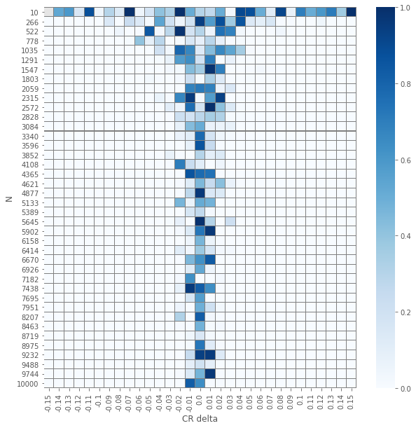
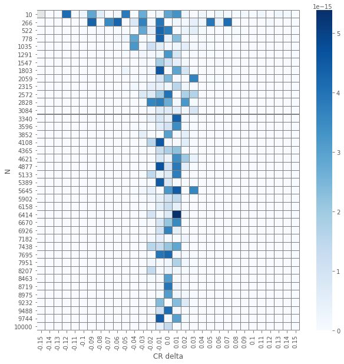
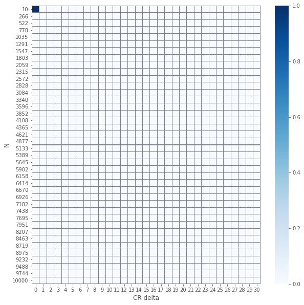

- Mon 19 February 2018
- Stats
- #hypothesis, #testing, #z-test, #chi2-test
This post is a snapshot of a notebook that can be found here: (fd870a6).
You can also enjoy the binder version of this notebook 
import pandas as pd
import numpy as np
from scipy import stats
from statsmodels.stats import proportion
from ipywidgets import interact, interactive, fixed, interact_manual
import ipywidgets as widgets
%matplotlib inline
import seaborn as sns
import matplotlib.pyplot as plt
plt.style.use('ggplot')
Preface
The motivation for this tutorial is to better understand the methods to assess the results of A/B(/C...) tests. There are so many common pitfalls when it comes to A/B tests; make sure you avoid them! For example, this check list might be a good reference.
A common and repeating question is how to check the significance of the results of an A/B test. Matt Brems provided a very nice summary. I wanted to compare two of the tests suggested:
The plan
Let us define \(N\) to be a set of \(u\) integers and \(\Delta\) to be a set of \(v\) real numbers. For each \(n \in N\) and \(\delta \in \Delta\) we generate a synthetic results of an A/B test. In particular the control and variant groups would have \(\sim n\) observations. The reason is that in real results of A/B tests, the groups sizes are normally not identical; they are close but not equal. Furthermore, the control set would have a fixed \(\mathrm{CTR}\) (click through rate) and the variant will have conversion rate of \(\mathrm{CTR} + \delta\).
As the null hypothesis we take that the CTR of the control and variant groups is the same, independently of the treatment. Thus a small \(p\)-value should suggest to reject the null hypothesis. For each synthetic result we will compute the \(p\)-value using a \(z\)-test and a \(\chi^2\)-test. In general, we expect that the smaller \(n\) is and the larger \(\delta\), the resulting \(p\)-value would be larger.
Generate data
Groups' sizes
In reality, even though we assume the users are split randomly and evenly, the final groups' sizes are not identical. Therefore, we randomize the group size:
def rand_group_size(N, tol=0.05):
return N + np.random.randint(
min(-tol * N, -1),
max(tol * N, 1) + 1)
Event's value
For each successful event we assign a value.
To that end we use a truncated uniform distribution providing the low and up values, together with the mean (mu) and standard deviation (sigma).
def rand_values(low, up, mu, sigma, N):
return stats.truncnorm(
(low - mu) / sigma,
(up - mu) / sigma,
loc=mu, scale=sigma).rvs(N)
Generating the data for a group
When generating an observation, the following features are randomized:
- The group size; controlled by
N(~size) andN_tol. Seerand_group_size - Name of the group. Normally
controlorvar. Configured bytreat. - Randomly assign
1is the event was converted and0otherwise. The randomness is controlled by the weightctr - In case of conversion what was the value; controlled by:
min_val,max_val,mean_valandstd_val - What day of the test is it; controlled by number of
daysand the distributiondays_dist seedcan help you reproduce the results.
def generate_group_observations(N=1000, N_tol=0.05,
treat='control',
ctr=0.2,
min_val=None, max_val=None,
mean_val=None, std_val=None,
days=7, days_dist=[1/7] * 7,
verbose=True,
seed=42
):
if verbose:
print('Generating ~{N} samples with tolerance {tol}'.format(N=N, tol=N_tol))
print('CTR: {ctr}'.format(ctr=ctr))
print('Min value: {min_val} / Max value: {max_val}'.format(min_val=min_val,
max_val=max_val))
print('Value mean: {mean_val} / Value STD: {std_val}'.format(mean_val=mean_val,
std_val=std_val))
print('Generating observation over {days} days with {dist} as the distribution'.format(
days=days, dist=days_dist
))
if seed is not None:
np.random.seed(seed)
N = rand_group_size(N=N, tol=N_tol)
converts = np.random.choice([0, 1], size=N, p=[1 - ctr, ctr])
values = np.multiply(rand_values(min_val, max_val, mean_val, std_val, N), converts)
day = np.random.choice(np.arange(0, days), p=days_dist, size=N)
return pd.DataFrame(
{
"Treat": [treat] * N,
"Day": day,
"Converted": converts,
"Value": values
}
)
Here is an example of ~10 observation (for a single group) spread along two days
generate_group_observations(
N=10, days=2, days_dist=[0.4, 0.6],
min_val=30, max_val=100, mean_val=60, std_val=20, seed=314)
Generating ~10 samples with tolerance 0.05
CTR: 0.2
Min value: 30 / Max value: 100
Value mean: 60 / Value STD: 20
Generating observation over 2 days with [0.4, 0.6] as the distribution
| Converted | Day | Treat | Value | |
|---|---|---|---|---|
| 0 | 1 | 1 | control | 58.682799 |
| 1 | 0 | 1 | control | 0.000000 |
| 2 | 1 | 1 | control | 83.425302 |
| 3 | 0 | 0 | control | 0.000000 |
| 4 | 1 | 0 | control | 37.115954 |
| 5 | 1 | 0 | control | 85.991153 |
| 6 | 0 | 1 | control | 0.000000 |
| 7 | 0 | 1 | control | 0.000000 |
| 8 | 1 | 1 | control | 53.225721 |
We are now ready to generate a synthetic results set of an A/B test, using the following function.
def generate_observations(N=1000,
control_ctr=0.2,
control_min_value=50,
control_max_value=150,
control_mean_sale=80,
control_std_sale=20,
var_ctr=0.15,
var_min_value=50,
var_max_value=150,
var_mean_sale=90,
var_std_sale=30,
days=7, days_dist=[1/7] * 7,
seed=42,
verbose=True
):
np.random.seed(seed)
control = generate_group_observations(N=N, days=days, days_dist=days_dist,
ctr=control_ctr, min_val=control_min_value, max_val=control_max_value,
mean_val=control_mean_sale, std_val=control_std_sale,
treat='control',
seed=None, verbose=verbose
)
var = generate_group_observations(N=N, days=days, days_dist=days_dist,
ctr=var_ctr, min_val=var_min_value, max_val=var_max_value,
mean_val=var_mean_sale, std_val=var_std_sale,
treat='var',
seed=None, verbose=verbose
)
results = pd.concat([control, var]).reset_index(drop=True)
return results
Here's a ~10 days X 2 (for control and variation groups) results set
generate_observations(N=10, seed=262, verbose=False)
| Converted | Day | Treat | Value | |
|---|---|---|---|---|
| 0 | 0 | 1 | control | 0.000000 |
| 1 | 1 | 6 | control | 90.575667 |
| 2 | 0 | 2 | control | 0.000000 |
| 3 | 0 | 0 | control | 0.000000 |
| 4 | 0 | 3 | control | 0.000000 |
| 5 | 0 | 6 | control | 0.000000 |
| 6 | 0 | 3 | control | 0.000000 |
| 7 | 1 | 5 | control | 88.962021 |
| 8 | 0 | 2 | control | 0.000000 |
| 9 | 0 | 3 | control | 0.000000 |
| 10 | 0 | 6 | var | 0.000000 |
| 11 | 0 | 6 | var | 0.000000 |
| 12 | 1 | 6 | var | 61.830611 |
| 13 | 0 | 2 | var | 0.000000 |
| 14 | 0 | 1 | var | 0.000000 |
| 15 | 0 | 6 | var | 0.000000 |
| 16 | 0 | 6 | var | 0.000000 |
| 17 | 1 | 4 | var | 74.639051 |
| 18 | 0 | 0 | var | 0.000000 |
Conversion rate
At this point we want to aggregate the results and compute the metric (a.k.a. proportion) we are after. In this example we consider the conversion rate.
def agg_conversion(results):
conversions = results.groupby('Treat')['Converted'].agg(['count', 'sum'])
conversions.rename(columns={'count': 'Visitors', 'sum': 'Converted'}, inplace=True)
conversions['Not_converted'] = conversions.Visitors - conversions.Converted
conversions['CR'] = conversions.Converted / conversions.Visitors
return conversions
For the conversion rate we aggregate the raw events into a contingency matrix. Here is the resulting aggregation of the data generated previously.
agg_conversion(generate_observations(N=10, seed=262, verbose=False))
| Visitors | Converted | Not_converted | CR | |
|---|---|---|---|---|
| Treat | ||||
| control | 10 | 2 | 8 | 0.200000 |
| var | 9 | 2 | 7 | 0.222222 |
Conversion rate and sample size
In this example (you have to run the notebook interactively) you can witness how the smaller the sample size is the further off the conversion rate is from the one prescribed in the generation function.
- Fix the conversion rate for the control and variation groups
- Play around with \(N\). Note that the larger \(N\) is the aggregation of the results gets closers to the values set.
For every value of \(N\) we generate a synthetic data set and aggregate it to get the observed conversion rate. The synthetic
interact(
lambda N, control_ctr, var_ctr: print(
agg_conversion(
generate_observations(
seed=None, verbose=False,
N=N,
control_ctr=control_ctr,
var_ctr=var_ctr
))['CR']
),
control_ctr=widgets.FloatSlider(value=0.2, min=0, max=1, step=0.05, description='Control CR'),
var_ctr=widgets.FloatSlider(value=0.15, min=0, max=1, step=0.05, description='Variation CR'),
N=widgets.IntSlider(min=10,max=5000,step=100,value=1000)
);
Failed to display Jupyter Widget of type interactive.
If you're reading this message in the Jupyter Notebook or JupyterLab Notebook, it may mean that the widgets JavaScript is still loading. If this message persists, it likely means that the widgets JavaScript library is either not installed or not enabled. See the Jupyter Widgets Documentation for setup instructions.
If you're reading this message in another frontend (for example, a static rendering on GitHub or NBViewer), it may mean that your frontend doesn't currently support widgets.
Experimenting with different statistical tests
First, here is a simple utility to plot a heat map of the the resulting \(p\)-values.
def plot_experiment(df):
"""
Utility function to plot a heatmap of the resulting p-values
"""
plt.figure(figsize=(10,10))
ax = sns.heatmap(df, cmap=plt.cm.Blues, linecolor='gray',
xticklabels=df.columns.values.round(2),
linewidths=.02
)
ax.set(xlabel='CR delta', ylabel='N')
ax.set_yticklabels(rotation=0, labels=Ns);
As discussed in the outline, we generate results for various \(n\)'s and various CTRs of the variant group.
def generate_data(control_ctr, deltas, Ns, seeds_seed=None):
"""
Generate data for len(Ns)*len(deltas) experiment.
Each experiment has ~N observation in each group and
the CTR of the variation is control_ctr+delta
"""
if seeds_seed is not None:
np.random.seed(seeds_seed)
seeds = np.random.randint(0, 2**32 - 1, size=(len(Ns), len(deltas)))
experiments = [
[
generate_observations(
N=N, control_ctr=control_ctr,
var_ctr = control_ctr + delta,
seed=seeds[i][j] if seeds_seed is not None else None,
verbose=False
) for j, delta in enumerate(deltas)
] for i, N in enumerate(Ns)
]
return pd.DataFrame(experiments, index=Ns, columns=deltas)
Finally, generating the data:
deltas = np.linspace(-0.15, 0.15, num=31)
Ns = np.round(np.linspace(10, 10000, num=40)).astype('int64')
data = generate_data(seeds_seed=262, control_ctr=0.2,
deltas=deltas, Ns=Ns,
)
For each A/B test we aggregate the data:
data_agg = data.applymap(agg_conversion)
Utility function to element-wise \(p\)-value computation:
def compute_proportions_pvals(data_agg, test):
"""
Compute the p-value of a single A/B test.
`test` is assumed to be from `statsmodels.stats.proportion`
"""
return data_agg.applymap(lambda x: test(x['Converted'], x['Visitors'])[1])
\(\chi^2\) independence test
pvals_chi2 = compute_proportions_pvals(data_agg, proportion.proportions_chisquare)
plot_experiment(pvals_chi2)
/Users/drorata/anaconda3/envs/z-vs-ch2-tests/lib/python3.6/site-packages/scipy/stats/stats.py:4554: RuntimeWarning: invalid value encountered in true_divide
terms = (f_obs - f_exp)**2 / f_exp

\(z\) test
pvals_z = compute_proportions_pvals(data_agg, proportion.proportions_ztest)
plot_experiment(pvals_z)
/Users/drorata/anaconda3/envs/z-vs-ch2-tests/lib/python3.6/site-packages/statsmodels/stats/weightstats.py:670: RuntimeWarning: invalid value encountered in double_scalars
zstat = value / std_diff

Comparing \(z\)-test and \(\chi^2\) test
The results of the element-wise \(z\) and \(\chi^2\) tests yields an expected visualization. The smaller the number of samples per group \(N\) is and the smaller \(\delat\) is we have \(p\)-values that are larger. But, and it is not a huge surprise, the visuals for the two different tests seems similar. Let us check how close are they.
pvals_diffs_close = pd.DataFrame(np.isclose(pvals_chi2, pvals_z))
pvals_diffs = (pvals_chi2 - pvals_z).abs()
plot_experiment(pvals_diffs)

plot_experiment(pvals_diffs_close.applymap(lambda x: 0 if x else 1))

So we see that except a single(!) case, all \(p\)-values are the same!